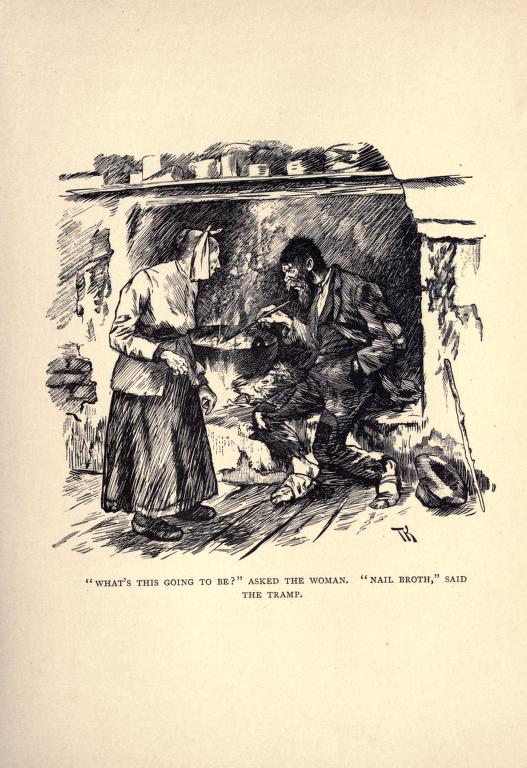

Stone Soup / Axe Porridge#
Another story that came to me in recent times via my ‘Tis Tales co-teller, Sue Bailey, though again it was familiar but not in a way I could place.
The gist of the tale is this:
A poor traveller (variously a soldier/pilgrim/woodcutter/orphans) comes upon a cottage; it’s cold, and the miserly widow allows the traveller(s) in; he asks for a morsel of food, but she says she has none; so he asks for a pot of water to boil that he could make a meal for them both, variously stone stoup/axe porridge. The water is brought to the boil, and the stone/axe placed in it. At various points, the traveller(s) taste the liquor, claims it is lacking a little something, which the widow duly obliges with. At the final tasting, the widow is impressed, and asks to buy the stone/axe. The travller leaves well fed and with a coin in their pocket.
In the first version of my Unforeseen Consequences: Travelling the Road set (February, 2023), I used a variant of this tale as part of an opening sequence, with a story that started not at the beginning, but in the middle: two children are walking through a forest, running through a forest, then stumbling through the forest, fleeing some unknown terror; as night falls, they meet two travellers, an old tinker and his wife, coming the other way, in the middle of their own story, perhaps. The old couple make camp with the children that night, tell them stories, and in the morning ask the children to join them on their journey. But the children won’t go back the way they’d come. They are each given a secret, and carry on on their way. They pass an old house on the outskirts of a village, and share the knowing glance of outsiders with an old woman stood out in the garden there. In the village, they make camp. The girl is cold, so the boy mays a fire with a flint given to him by the old man. The boy is hungry, and the girl says the old woman told her how to cure that. She goes back to the cottage, asks to borrow a large iron pot such as you might hang over a fire, notices a bowl and takes that too. She fills the pot with water from the well, and children of the village watch her, follow her back, ask what she’s doing. Stone soup. Each bring something for it. Villagers come out; girl fills the old woman’s bowl, places it by her side. The villages share and talk. The girl looks to the bowl: it is empty. The children leave. Ever since, the people of that village have gathered once a year, shared a meal. And each time they do, a bowl full of soup is left out for anyone who might need it.
In the second iteration of this set, for the first Isle of Wight Steampunk festival, I embed this tale in the Wish Ring, as a tale related to a item in Mary’s “box of precious things” — a recipe stone, etched with the word “soup” — merch from the time of once, when a tinker and his wife came travelling to their village.
I’ve also wondered about using this story in something like a plains old people style frame tale.
One variant I particularly like can be found in a collection of tales “from Soviet lands”:
“Axe Porridge”, in A Mountain of Gems, Irina Zheleznova, 1963
In A Mountain Of Gems: Fairy Tales of the People of Soviet Lands. translated from the Russian by Irina Zheleznova, p19-20:
AXE PORRIDGE
A Russian Fairy-Tale
An old soldier was once on his way home for his leave, and he was tired and hungry. He reached a village and he rapped at the first hut.
“Let a traveller in for the night,” said he.
The door was opened by an old woman.
“Come in, soldier,” she offered.
“Have you a bite of food for a hungry man, good dame?” the soldier asked.
Now the old woman had plenty of everything, but she was stingy and pretended to be very poor.
“Ah, me, I’ve had nothing to eat myself today, dear heart, there is nothing in the house,” she wailed.
“Well, if you’ve nothing, you’ve nothing,” the soldier said. Then, noticing an axe without a handle under the bench: “If there’s nothing else, we could make porridge out of that axe.”
The old woman raised both hands in astonishment.
“Axe porridge? Who ever heard the like!”
“I wil show you how to make it. Just give me a pot.”
The old woman brought a pot, and the soldier washed the axe, put it in the pot, and filling the pot with water, placed it on the fire.
The old woman stared at the soldier, never taking her eyes off him.
The soldier got out a spoon and stirred the water and then tasted it.
“It will soon be ready,” said he. “A pity there’s no salt.”
“Oh, I have salt. Here, take some.”
The soldier put some salt in the pot and then tried the water again.
“If we could just add a handful of groats to it,” said he.
The old woman brought a small bag of groats from the pantry.
“Here, add as much as you need,” said she.
The soldier went on with his cooking, stirring the meal from time to time and tasting it. And the old woman watched, and could not tear her eyes away.
“Oh, how tasty this porridge is!” the soldier said, trying a spoonful. “With a bit of butter there would be nothing more delicious.”
The old woman found some butter too, and they buttered the porridge.
“Now get a spoon, good dame, and let us eat!” the soldier said.
They began eating the porridge and praising it.
“I never thought axe porridge could taste so good!” the old woman marvelled.
And the soldier ate, and laughed up his sleeve.
Or this example translated from Hungarian tales of the Bukovina Székely:
Hungarian tale
https://www.nepmese.hu/mesetar/mesek/trefas-mesek/a-koleves
Where he was, where he wasn’t, there was once a poor soldier returning home from war. He went out of one village and into another, poor in rags and hungry. But they certainly didn’t offer him anywhere with a bite of bread or a little warm soup. He asked for one house and the other house as well. Here they instigated the dog, there they pretended to be so poor that they had nothing. Well, as he said goodbye, he decided to himself that you should stop at the next house, whoever it may be, and I will cook soup there. He picked up a stone from the gate and entered the very first house. It just belonged to an old woman. - Good day, old lady! - God forbid, brave sir! - Well, how is your health and how does it serve you? - You serve as you serve, so how do you serve my brave master? - It serves me somehow, I’m just hungry, I’d eat something if you had it, if you’d be willing to give it to me. - Alas, my soul, valiant lord, I would give, if there were. But I am as poor as a church mouse. I have nothing, my closet, my attic, everything is empty. - Well - says the soldier - I’m not that poor, I have a big stone in my pocket. I could make soup out of it, I just need a cauldron or pot to cook it in. - Well, I can give you that, because I have enough pots - the old woman calmed down, but there is nothing for me to put in them. Well, the soldier washed the stone well and put it in the pot. The old woman made a fire. The soldier poured water on the stone and put it there to cook. He stirred it with a long wooden spoon. The old woman watched. The soldier even tasted it. - Well, it’s good - he clicked his tongue - but if there was a little salt in it, it would be even better. - I’ll bring salt, I have it! The soldier puts the salt in, stirs it, and says: - You know, if it had a spoonful of fat, then it would be really good. - I have that too, I’ll bring it! - boasted the old woman. He brought a spoonful of fat, which was also dropped into the pot. The soldier stirs it, tastes it, watches the old woman. The soldier says again: - Do you know, I used to cook stone soup, but there was also sausage in it. How delicious it is! - I also have sausage - offered the old woman - I’ll bring a piece from the pantry. “Bring two pieces then, old lady, I need a piece and you too,” said the soldier afterwards. - I’ll bring it, I’ll bring it! - The old woman brought two pieces of sausage. The soldier let it into the pot as well. He stirs it, tastes it. - Do you know, if you have a few grains of chickpeas or potatoes, we would peel them and chop them in here, and even if you had vegetables, that would be all right. - I have that too - the old woman pulled herself out proudly - I’ll bring that too. He quickly brought some carrots, parsley, and fenugreek, they cleaned them and put them in the soup. The soldier stirs it, tastes it, and hands the spoon to the old woman. - Just taste it, it’s good now! The old woman tastes it and licks the corner of her mouth. - Oh, well, I never thought that you could cook such a good soup from the stone. They let it simmer for a little while, then the soldier spoke again: - A couple of grains of rice porridge would be good, but isn’t there? - I have that too - the old woman sneered. Soon, a couple of grains of rice were sprinkled in, and then the soldier stroked his belly with satisfaction. - This is now just the way I cook it! They waited for it to cook. The soldier filled a large plate for himself and one for the old woman, and they scooped it up with gusto. The old woman couldn’t help but wonder how such good soup could be made from stone. When they were full, he turned to the soldier. - Tell me, brave sir, won’t you sell this stone? Often I don’t even have what to cook, and I could make a good soup out of it. - Of course! - snapped the soldier immediately. He smiled under his mustache. I’ll give it to you for a hundred forints. The old woman quickly gave the hundred forints, and from the soup, what remained of the stone, she wrapped it in a clean towel and put it aside so that she would have it when she wanted to cook soup. The soldier quickly said goodbye with the hundred forints in his pocket, lest the old woman change her mind and ask for it back. Now that he was full and had a hundred forints, he merrily went on his way until the evening, until he found another old woman who didn’t know how to cook stone soup. There he was satisfied again. I don’t know what kind of soup the poor old woman was able to cook from that stone. Aunt Kalári told me this story. Maybe they tried it when they were still poor in Bukovina.
We can also find Scandinavian variants, such as in this tale of nail broth:
“The Old Woman and the Tramp”, in Fairy tales from the Swedish, Nils Gabriel Djurklou, 1901
In Fairy tales from the Swedish, Nils Gabriel Djurklou, 1901 p33-41
incl. illustration at p37
THE OLD WOMAN AND THE TRAMP
THERE was once a tramp, who went plodding his way through a forest. The distance between the houses was so great that he had little hope of rinding a shelter before the night set in. But all of a sudden he saw some lights between the trees. He then discovered a cottage, where there was a fire burning on the hearth. How nice it would be to roast one’s self before that fire, and to get a bite of something, he thought; and so he dragged himself towards the cottage.
Just then an old woman came towards him.
“Good evening, and well met!” said the tramp.
“Good evening,” said the woman. “Where do you come from?”
“South of the sun, and east of the moon,” said the tramp; “and now I am on the way home again, for I have been all over the world with the exception of this parish,” he said.
“You must be a great traveller, then,” said the woman. “What may be your business here?”
“Oh, I want a shelter for the night,” he said.
“I thought as much,” said the woman; “but you may as well get away from here at once, for my husband is not at home, and my place is not an inn,” she said.
“My good woman,” said the tramp, “you must not be so cross and hard-hearted, for we are both human beings, and should help one another, it is written.”
“Help one another?” said the woman, “help? Did you ever hear such a thing? Who’ll help me, do you think? I haven’t got a morsel in the house! No, you’ll have to look for quarters elsewhere,” she said.
But the tramp was like the rest of his kind; he did not consider himself beaten at the first rebuff. Although the old woman grumbled and complained as much as she could, he was just as persistent as ever, and went on begging and praying like a starved dog, until at last she gave in, and he got permission to lie on the floor for the night.
That was very kind, he thought, and he thanked her for it.
“Better on the floor without sleep, than suffer cold in the forest deep,” he said; for he was a merry fellow, this tramp, and was always ready with a rhyme.
When he came into the room he could see that the woman was not so badly off as she had pretended; but she was a greedy and stingy woman of the worst sort, and was always complaining and grumbling.
He now made himself very agreeable, of course, and asked her in his most insinuating manner for something to eat.
“Where am I to get it from?” said the woman. “I haven’t tasted a morsel myself the whole day.”
But the tramp was a cunning fellow, he was.
“Poor old granny, you must be starving,” he said. “Well, well, I suppose I shall have to ask you to have something with me, then.”
“Have something with you!” said the woman. “You don’t look as if you could ask any one to have anything! What have you got to offer one, I should like to know?’
“He who far and wide does roam sees many things not known at home; and he who many things has seen has wits about him and senses keen,” said the tramp. “Better dead than lose one’s head! Lend me a pot, grannie!”
The old woman now became very inquisitive, as you may guess, and so she let him have a pot.
He filled it with water and put it on the fire, and then he blew with all his might till the fire was burning fiercely all round it. Then he took a four-inch nail from his pocket, turned it three times in his hand and put it into the pot.
The woman stared with all her might.

“What’s this going to be?” she asked.
“Nail broth,” said the tramp, and began to stir the water with the porridge stick.
“Nail broth?” asked the woman.
“Yes, nail broth,” said the tramp.
The old woman had seen and heard a good deal in her time, but that anybody could have made broth with a nail, well, she had never heard the like before.
“That’s something for poor people to know,” she said, “and I should like to learn how to make it.”
“That which is not worth having, will always go a-begging,” said the tramp.
But if she wanted to learn how to make it she had only to watch him, he said, and went on stirring the broth.
The old woman squatted on the ground, her hands clasping her knees, and her eyes following his hand as he stirred the broth.
“This generally makes good broth,” he said; “but this time it will very likely be rather thin, for I have been making broth the whole week with the same nail. If one only had a handful of sifted oatmeal to put in, that would make it all right,” he said. “But what one has to go without, it’s no use thinking more about,” and so he stirred the broth again.
“Well, I think I have a scrap of flour somewhere,” said the old woman, and went out to fetch some, and it was both good and fine.
The tramp began putting the flour into the broth, and went on stirring, while the woman sat staring now at him and then at the pot until her eyes nearly burst their sockets.
“This broth would be good enough for company,” he said, putting in one handful of flour after another. “If I had only a bit of salted beef and a few potatoes to put in, it would be fit for gentlefolks, however particular they might be,” he said. “But what one has to go without, it’s no use thinking more about.”
When the old woman really began to think it over, she thought she had some potatoes, and perhaps a bit of beef as well; and these she gave the tramp, who went on stirring, while she sat and stared as hard as ever.
“This will be grand enough for the best in the land,” he said.
“Well, I never!” said the woman; “and just fancy all with a nail!”
He was really a wonderful man, that tramp! He could do more than drink a sup and turn the tankard up, he could.
“If one had only a little barley and a drop of milk, we could ask the king himself to have some of it,” he said; “for this is what he has every blessed evening that I know, for I have been in service under the king’s cook” he said.
“Dear me! Ask the king to have some! Well, I never!” exclaimed the woman, slapping her knees.
She was quite awestruck at the tramp and his grand connections.
“But what one has to go without, it’s no use thinking more about,” said the tramp.
And then she remembered she had a little barley; and as for milk, well, she wasn’t quite out of that, she said, for her best cow had just calved. And then she went to fetch both the one and the other.
The tramp went on stirring, and the woman sat staring, one moment at him and the next at the pot.
Then all at once the tramp took out the nail.
“Now it’s ready, and now we’ll have a real good feast,” he said. “But to this kind of soup the king and the queen always take a dram or two, and one sandwich at least. And then they always have a cloth on the table when they eat,” he said. “But what one has to go without, it’s no use thinking more about.”
But by this time the old woman herself had begun to feel quite grand and fine, I can tell you; and if that was all that was wanted to make it just as the king had it, she thought it would be nice to have it just the same way for once, and play at being king and queen with the tramp. She went straight to a cupboard and brought out the brandy bottle, dram glasses, butter and cheese, smoked beef and veal, until at last the table looked as if it were decked out for company.
Never in her life had the old woman had such a grand feast, and never had she tasted such broth, and just fancy, made only with a nail!
She was in such a good and merry humour at having learnt such an economical way of making broth that she did not know how to make enough of the tramp who had taught her such a useful thing.
So they ate and drank, and drank and ate, until they became both tired and sleepy.
The tramp was now going to lie down on the floor. But that would never do, thought the old woman; no, that was impossible. “Such a grand person must have a bed to lie in,” she said.
He did not need much pressing. “It’s just like the sweet Christmas time,” he said, “and a nicer woman I never came across. Ah, well! Happy are they who meet with such good people,” said he; and he lay down on the bed and went asleep.
And next morning when he woke the first thing he got was coffee and a dram.
When he was going the old woman gave him a bright dollar piece.
“And thanks, many thanks, for what you have taught me,” she said. “Now I shall live in comfort, since I have learnt how to make broth with a nail.”
“Well, it isn’t very difficult, if one only has something good to add to it,” said the tramp as he went his way.
The woman stood at the door staring after him.
“Such people don’t grow on every bush,” she said.
The oldest variant I have come across dates back to 1673:
In The Sack Full of News, 1673 (1866)
In The Sack-full of Newes, 1673: Reprinted from the Rare Original, William Carew Hazlitt, 1866, p167-8
Another
There was a fryer in London, which did use to go often to the house of an old woman, but ever when he came to her house, she hid all the meat she had. On a time this fryer came to her house (bringing certain company with him) and demanded of the wife if she had any meat And she said; Nay. Well, quoth the fryer, have you not a whetstone? Yea (qd the woman); what will you do with it? Marry, qd he, I would make meat thereof. Then she brought a whetstone. He asked her likewise if she had not a frying-pan. Yea, said she, but what the divil will ye do therewith? Marry (said the fryer), you shall see by and by what I will do with it; and when he had the pan, he set it on the fire, and put the whetstone therein. Cocks body, said the woman, you will burn the pan. No, no, qd the fryer, if you will give me some eggs, it will not burn at all. But she would have had the pan from him, when that she saw it was in danger; yet he would not let her, but still urged her to fetch him some eggs, which she did. Tush, said the fryer, here are not enow, go fetch ten or twelve. So the good wife was constrayned to fetch more, for feare lest the pan should burn; and when he had them, he put them in the pan. Now, qd he, if you have no butter, the pan will burn and the eggs too. So the good wife being very loth to have her pan burnt, and her eggs lost, she fetcht him a dish of butter, the which he put into the pan and made good meat thereof, and brought it to the table, saying: much good may it do you, my Masters; now may you say, you have eaten of a buttered whetstone. Whereat all the company laughed, but the woman was exceeding angry, because the fryer had subtilly beguiled her of her meat.
The story also makes an appearance at the start of the nineteenth century:
The Stone Eaters (Original Recipe) The European Magazine, 1806
In The European magazine, and London review, October, 1806, Vol 50, p268-70:
THE STONE-EATERS, AND THE ORIGINAL RECIPE TO MAKE STONE SOUP
“Not long ago there was in England a private soldier,” says the Hon. Robert Boyle [Boyle's Exp. Philo. par. ii, essay 3, p. 68.] , “very famous for swallowing and digesting off stones and a very inquisitive man assures me, that he knew him familiarly, and had the curiosity to keep him company for twenty four hours together, in order to watch him, and not only observed that he ate nothing but stones daring that time, but also that he voided a sandy substance, as if the stones had digested, dissolved and crumbled in his body.”
There never, perhaps, existed a more truly excellent, and a more indefatigable man than Mr. Boyle [We must here offer a few words in favour of Mr. B., although they tend to censure an author whose works were, generally speaking, almost idolizes. Swift, in his Meditation upon a Broomstick, is said to have had him in view. Yet surely there was nothing in the character of Boyle, except the Dean had an eye to his political principles, (for he was, though moderate, a *Whig*) that could excite, or deserve ridicule: therefore, if the Meditation was levelled at him, its satire, if it had any at the time, must have recoiled upon its author. Swift, it must be observed, had a most contemptible opinion of *frivolous* philosophy, and this induced him to deem many inquiries and experiments such that had their bases on good sense and natural principles. In this and some other instances, of which he saw only the ridiculous side, his satirical propensity frequently overcame his judgment, or he would have reflected, that it was from a long series of studies apparently minute, and of experiments apparently trifling, that the most important truths have been obtained, and the most useful discoveries made. This was all one to Swift: if he had humour in view, he scorned to be stopped by the cross-bar of utility. Looking upon many masses[?] of human learning as altogether drois[?], he was always ready to laugh at those patient and persevering spirits which enddeavoured to find sparks of ore in them; and if in the course of their labours they indicated political opinions hostile to his own, he seems to have been always equally ready to represent those exertions as useless or ridiculous.]: his whole life exhibits a series of studies an labours all tending to promote the prosperity, or, what is of infinitely more importance, to ensure the eternal happiness of his fellow-creatures. Yet with all the virtues that could adorn the most elevated rank and a genius that would have added wings to the humblest, we have frequently been doubtful whether he was not at times a little tinctured with credulity. Pre-eminently virtuous himself, he had no idea that others could deceive him: therefore, fearing that he had in some few instances taken things upon trust, we are very glad his inquisitive friend is corroborated and confirmed in this by two or three authorities that we shall briefly quote.
Dr. Bulwar says, in his Artificial Changelin, that the name of the man mentioned by Mr. Boyle was Francis Bataglia, and was at that time about thirty years of age; that he was born with two stones in one hand, and one in the other, which the child took for his first nourishment. He afterwards, it appears,” (this was, we suppose, when he was grown to man’s estate,) “by the advice of his physicians,” (and strange physicians they must have been,) “took nothing else but three or four pebbles in a spoon once in twenty-four hours, and a draught of beer after them, and, in the interim, now and then, a pipe of tobacco, for he had been a soldier in Ireland, and served at the siege of Limerick. Upon his return to London he was confined for some time upon suspicion of imposture and falseness of pretence [Bulwar's Anthropoemetamorphosis, p. 307.— Of this man, who seems to have practised a singular kind of imposture, there is a print engraved by Hollar, which is still extant. In this he is represented as holding a goblet in one hand and a plate of pebbles in the other. Under the print is this inscription: "The true portraiture of the Roman youth whose strange life and birth cannot be sufficiently admired. He was born holding three little stones in one hand, in the other two, &c.]. He then ate about half a peck of stones daily!!!
Sir Charles Hale, the celebrated physician of the seventeenth century, states, [Philos. Trans. No, 153.] that one Thomas Gobsill, a lean man, aged about twenty-six or twenty-seven years, being tortured for three years with wind, was advised to swallow round white pebbles. The first doses that he took were said to hare had a proper effect; but afterward, perhaps from too frequent a repetition of the medicine, the stones remained two years and a half in his body. [Dr. Sloane mentions a case of the same nature.]
Having stated these cases, which we found a greater difficulty in swallowing than the several patients did the pebbles, we will endeavour to match them with another much more recent, and which indeed must, in substance, be within the memory of many or our compatriots.
We think that more than twenty years cannot have elapsed since a very famous practitioner upon the credulity of the people appeared in the metropolis of England; a city, or rather a compages of cities, towns, and villages, which form the national centre of wisdom and sagacity. This man, this celebrated genius, who afterward travelled to most parts of the kingdom, made, while he resided with us, a very comfortable livelihood by eating flints.
Boniface said, that he ate, drank, and slept upon ale. So did our adventurer upon pebbles. But although, to the contracted ideas of his friends, this seemed to be a hard regimen, he appears to have been so perfectly satisfied with it, that he fed upon stones with great pleasure, and rested upon them with great composure. The Commissioners, when be first fixed his residence in the City, anxious for their pavement, very naturally inquired, as he was the most remarkable eater that they had seen, what had induced him to take his meals with them? This, we think, we have had the good fortune to discover. The famous Stone-eater is not, by us, supposed to have honoured the city of London, or even that of Westminster, with his presence, because his food was to be found in greater plenty there than in many other parts of the united kingdom. In fact,he knew to the contrary. He well knew, that if he had chosen to travel to the Hebrides, to the coast of Antrim, or even to the island of Portland, he might in either of those places have found more stones than we believe any one could eat during the longest existence. But a store of this kind of food, such as any reasonable being would have deemed a solid provision for life, does not appear to have been exactly the object that he had in view; for although a breakfast of stones might be useful to him, by the way of laying a good foundation, it has been whispered, that he had an appetite for lighter viands, if not for dinner, at least by way of dessert. Though pebbles were not more plenty in town than in many parts of the country, he knew that Flats were; and from these, though their qualities were diametrically opposite to that of Flints, he also knew how, by properly striking them, to extract sparks which warmed and animated him; or perhaps, although he considered their bodies as solid as the roots of crystal, yet he found that, like spar, their upper parts, which might be easily seen through, contained veins of gold, which were as easily extracted. He knew that, contrary to the received apophthegm, the people were ready to give him bread, because they believed that he could eat stones. Indeed, so firmly was the public persuaded that our adventurer was in the possession of this extraordinary faculty, that it has been said he might have been employed advantageously to Government, and profitably to himself, at no greater trouble than by the creation of a new place, and constituting him Stone-eater General, or General Stone-eater. Armed with this commission, what would hae hindered him for eating up the old wall of the Exchequer, that so long stood across and impeded the way betwixt the Old and New Palace Yards, and which at last was near overturning his Majesty’s state coach? He might also have been commissioned to eat through the flint stones which we know were penetrated with infinite labour, in order to make a new door and passage to the Treasury, and by which the way has been, of late, rendered much more easy. He might have swallowed Temple-bar, nibbled a bit of the south corner of St. Clement’s Church, and devoured Exeter ‘Change. But instead of saying what he might have done, if the interest of the metropolis had been properly considered, we shall close this notice by merely stating what he did, or rather what he was supposed to do.
About sixteen or seventeen years since, this genius, so celebrated for eating stones, had apartments in Cockspur-street. His whole length portrait was displayed on the outside, with a table and plate of stones before him. We believe his residence in a brick house to have been an act of necessity, as no landlord would have deemed it safe to have let him a lodging in one of stone, as he might literally have been ate “out of house and home.” In this place he used to make many public meals in a day; at which, like the public dinners that were formerly at court, he was frequently favoured with a good deal of company. His visitors, although they did not board, or rather stone with him, paid first half-a-crown; and when he, or, more properly speaking, the town, had almost a bellyfull, a shilling for their ordinary.
The stones, which were generally smooth pebbles, (for upon these common occasions he only piddled as one does with a lark at supper, or a few oysters before dinner,) were brought from the cold larder, served up in plates, and swallowed by him with great decorum. However, the company generally departed satisfied with this sight of A Feast, as passengers have been said to lose their appetites by inhaling the steam from a cook’s shop.
Many meals of this nature were made by this genius, who is to be honoured for having by a short process discovered the philosopher’s stone, with which he is said to have retired perfectly satisfied to enjoy his Otium cum dignitate.
RECIPE TO MAKE STONE SOUP.
A traveller, apparently wearied, arrived one morning at a small village that lies to the north of Schaffhausen, on the road to Zurich, in Switzerland. A good woman sat spinning and singing at the door of her cottage; he came up to her; talked first about the roughness of the roads, and then of the prospect of a luxuriant vintage along the banks of the Rhine: at last be asked her if she had any fire?
“To be sure I have! How should I dress my dinner else?”
“Oh, then,” said the Traveller, “as your pot is on, you can give me a little warm water.”
“To be sure I can! But what do you want with warm water?”
“If you will lend me a small pot,” said the Traveller, “I’ll show you.”
“Well! you shall have a pot. There, now what do you want with it?”
“I want,” said the Traveller, “to make a mess of stone soup?”
“Stone soup?” cried the woman, “I never heard of that before. Of what will you make it?”
“I will show you in an instant,” said the man. So untying his wallet, he produced a large smooth pebble. “Here,” he cried, “is the principal ingredient. Now toast me a large slice of bread, hard and brown. Well now, attend to me.”
The stone was infused in warm water; the bread was toasted, and put into the pot with it. “Now,” said the Traveller, “let me have a bit of bacon, a small quantity, of four krout, pepper, and salt, onions, celery, thyme.” In short, he demanded all the necessary materials. The good woman had a store cupboard and a well cropped garden; so that these were procured in an instant, and the cookery proceeded with great success.
When it was finished, the kind hostess, who had watched the operation with some anxiety, and from time to time longed to taste the soup, was indulged. She found it excellent. She had never before tasted any that was so good. She produced all the edibles that her cottage afforded; and spreading her table, she, with the Traveller, made a hearty meal, of which the stone soup formed the principal part.
When he took his leave, he told the good woman, who had carefully washed the stone, that as she had been so benevolent to him, he would, in return, make her a present of it.
“Where did you get it?” said she.
“Oh,” he replied, “I have brought it a considerable way; and it is a stone of that nature, that if it be kept clean, its virtue will never be exhausted, but, with the same ingredients, it will always make as good soup as that which we have this day eaten.”
The poor woman could hardly set any bounds to her gratitude; and she and the Traveller parted highly satisfied with each other.
Proud of this discovery, she, in general terms, mentioned it to her neighbours. By this means the recipe was promulgated; and it was in the course of many experiments at length found, that other pebbles would make as good soup as that in her possession. The viand now became fashionable through the Canton, and was indeed so generally approved, as to find its way to most of the peasants’ tables, where stone soup used frequently to be served as the first dish.
A few months later, the tale appears as an anecdote in the New York Weekly Magazine:
In New York Weekly Magazine, July 1807
In New-York Weekly Museum, Vol 19 Iss 24, July 25th, 1807, pp??:
Anecdotes
Two travellers, ready to die with hunger thirst, came to a churlish farmer’s begging some little matter to satisfy their stomachs. The Mistress of the house, some servants, and children only were at home. ‘Good people,’ said the dame, (who as churlish as her husband) ‘it is but six miles to the next town, where you may every thing you, want, and we have neither bread nor victuals in the house.’ Said one of the travellers ‘as for your bread and victuals, we want neither, can you oblige us with a tolerable large flint stone?’ ‘What for?’ ‘To make us some soup.’ ‘Oh! if that be ail,’ said the ill-natured Jezebel, ‘there are flints enough in the yard, but who the deuce told you a soup was made out of stones?’ ‘If you will have patience’ said the traveller, ‘and only assist us with a little water, you shall see’. ‘How much water do you want?’ ‘About a gallon.’ The maid was immediately ordered to put it on the fire. The traveller then went into the yard, and having, with great seeming circumspection, picked up a stone, washed it as clean as possible, and as soon as the water boiled soused it into the pot. After it had lain about a quarter of an hour, he gets a spoon. and tasting it, calls the landlady; ‘Here ma’am, only take a drop, has not it a most excellent favour?’ ‘A flavour?’ cries she, ‘the water is just as it was before’. The other traveller now put in his word, ‘you have forgot to put in the pot herbs’ ‘Faith, so I did,’ cried his comrade, ‘I thought it wanted something.’ ‘Prythee, good dame, let us have a few pot-herbs out of the garden, [and as the maid was going for them] bring also, added he, a cabbage, some onions, and two or three carrots; I know I never failed of making soup out of a stone in my life.’ ‘I’ll be shot’, says the farmer’s wife, ‘if you’ll make it now.’ ‘You shall see. Come let me have a little salt and pepper.’ He now seasoned the water, and after the garden stuff had boiled some time, he tasted the soup again, handing the spoon a second time to the farmer’s wife, with, ‘How is it at present?’ ‘Why,’ said she, ‘it is something better; but you’ll never make soup of it.’ ‘Faith!’ says he, smacking his lips, ‘I think it is excellent already: have you ever a bit of beef in the house?’ ‘I don’t know but there is,’ said she, ‘about two or three ls of a neck.’ ‘Nothing better— let me have it directly, with half a dozen burnt crusts of bread.’ These ingredients were allowed him like the rest. After a proper time he declared the soup was ready, and calling for a dish, poured it out, the stone appearing in the middle. Every one tasted, and declared it was excellent. ‘Heaven bless you,’ cried the farmer’s wife, ‘let me have a receipt— my good man will be pleased’. ‘Give me a piece of paper’, said the traveller, and I’ll write it down fer you,’ which he did as follows:— A Receipt to make Stone Soup. ‘Take a large stone, put it into a sufficient quantity of boiling water: properly season it with pepper and salt; and three or four pounds of good beef, a handful of pot herbs, some onions, a cabbage, and three or four carrots; when the soup is made the stone may be thrown away.’
Another American variant can be found in the New England Galaxy of 1826, which tells a tale of a trickster character who may be worth chasing down further:
A cook by practice, as well as by name, 1826
https://archive.org/details/sim_boston-pearl-and-galaxy_1826-06-30_9_455/page/n1/mode/2up New England Galaxy, 30th June, 1826, Vol 9 Iss 455 p3
MR. EDITOR. Many persons in this vicinity, have been considerably amused with the anecdotes, which you have published of Tom Cook. I find, on inquiry, that many are still living in this county, who knew him personally. Some of the anecdotes already published are undoubtedly genuine, as I have ascertained the times and places, when and where he performed his exploits. Respecting others, it is doubtful whether he is the hero, who is entitled to the praise or blame of the ingenuity or depravity, which appears in the stories related. I send you a few others, some of which undoubtedly belong to him, while some are doubtful. MIDDLESEX.
Tom was a cook by practice, as well as by name. Travelling one day fatigued, hungry and pennyless, he called at the house of a substantial farmer, where he found the mistress of the house and her daughters suitably employed. He asked the good woman if she or the young ladies understood how to make stone soup. They acknowledged at once they did not. Tom begged leave to show them, which was granted. He had brought with him a clean, round, smooth stone, of the size of a goose egg; which he exhibited, as the first ingredient, requisite for his purpose. He then called for an iron pot, which he washed clean, and filled in part with pure water, placing the stone carefully at the bottom. This he hangs over the fire, till the water boils. He then calls for fresh meat, salt pork, vegetables, spices, &c., and is readily furnished with them, in so far as the house afforded. Thus, by the time the farmer and his sons came from the field to dinner, there was a much better soup provided, than the family had been used to; so Tom of course was invited to a luxurious meal; while the family wondered that a stone, of the common kind, should make so much difference. After dinner, Tom candidly acknowledged, that the stone was of no service or deserving to the soup; but that he feared, if he had asked bread, they would have given him a stone, so he gave them a stone in return for their bread.
Tom Cook
Tom Cook appears to have been a trickster rogue, an incorrigible thief, a Robin Hood type figure, and a man who may, or may not, have been in league with the Devil, in New England in the mid to late eighteenth century.
In deeper history, it seems that the tale was often ascribed to the actions of St. Bernard:
St Bernard’s Soup, N&Q, Jan. 1892
Notes and Queries 1892-01-30: Vol 1 Iss 5 Notes and queries 8th S. I. JAN, 30, 1892 p88:
ST. BERNARD’S SOUP.— Will any reader of ‘N. & Q.’ kindly give me information with respect to the legend of St. Bernard’s soup? The frugal saint was supposed to make his soup with a pebble, adding, of course, various other ingredients. What is the origin of the legend, and where is it to be found? There is a story by A. Karr, ‘La Soupe au Caillou,’ but I do not think that he makes any mention, of St. Bernard. K. W. H.
Brewers Dictionary Of Phrase and Fable of 1870 describes Saint Bernard’s tale in the following way:
Stone soup or St. Bernard’s soup, Brewer’s, 1870
https://archive.org/details/dli.ernet.15983/page/867/mode/2up Brewers Dictionary Of Phrase and Fable (1870)
Publication date 1870 p867
Stone soup or St. Bernard’s soup.
The story goes that a beggar asked alms at a lordly mansion, but was told by the servants they had nothing to give him. “Sorry for it,” said the man, “but will you let me boil a little water to make some soup of this stone?” This was so novel a proceeding, that the curiosity of the servants was aroused, and the man was readily furnished with saucepan, water, and a spoon. In he popped the stone, and begged for a little salt and pepper for flavouring. Stirring the water and tasting it. he said it would be the better for any fragments of meat and vegetables they might happen to have. These were supplied, and ultimately he asked for a little ketchup or other sauce. When ready the servants tasted it, and declared that “stone soup” was excellent.
This story, which was a great favourite in the 16th and 17th centuries, was told with many variations, horseshoes, nails, rams-horns, etc., taking the place of the stone as narrated above.
This ascription was also picked up in the following article, widely syndicated by various local presses; the earliest publication date I have found for it dates to February 25th, 1939, in the Dumfries and Galloway Standard:
“St Bernard’s Soup”, Dumfries and Galloway Standard, Feb. 1939
In Dumfries and Galloway Standard, Saturday 25 February 1939, p14:
STRANGE LEGENDS.
SAINT BERNARD’S SOUP- Saint Bernard, the Abbot of Clairvaus, lived in the twelfth century, and was famed for his wisdom and kindness. Being a great man as well as good one he discovered that people were on their guard when they spoke to him, so in order to know what they were thinking about he sometimes disguised himself as a beggar and wandered the country.
On these occasions Saint Bernard like a real beggar. He set out without a penny in his pocket, and suffered all the hardships of the poor. When starving he had to trust to his wits to obtain food. After being refused even a crust in a certain village, he went to the house of the lord of the manor, and knocked at the door. But the servant tried to drive him away.
“Be off,” they cried. “We have nothing for you.”
“All I ask is a little cold water in which to boil a stone,” said St Bernard, showing them a large round stone he carried in his hand.
Thinking that it would be fun to watch a beggar eating a stone, the master told him to come into the kitchen and gave him a saucepan containing cold water. St Bernard rolled his eyes, rubbed his hands, set the saucepan on the fire, popped the stone in, and asked for a spoon with which to stir it.
“How my mouth waters,” he as he stirred the stone round and “This will bo de-li-ci-ous. Could you spare me little salt and pepper to season it?”
He was given salt and pepper, and went on boiling the stone. Then he asked for some cold vegetables that the cook was keeping for the dogs, and put them into the soup.
“A few fragments of meat improve stone soup tremendously, and a trifle of catsup or sauce of any kind makes it fit for a king. If only I had both, I’d ask you to taste my soup and I know that the master cook would not be ashamed of it.”
So they gave him some scraps of meat, a little boiled rice, crust, and some sauce. Ten minutes later St Bernard said his soup was ready. Then all the servants gathered round, tasted it, and declared it to be delicious. As for St. Bernard, he sat down on the doorstep and enjoyed it tremendously, but he slipped the stone into his pocket.
“Well I never,” thought when, with many thanks, handed him back the empty saucepan. “The stone’s gone.”
Off started St Bernard, refreshed and grateful, and he continued to live on stone soup till the story began to get about. Then the good Abbot laughed heartily, but the people laughed uncomfortably, because it showed meanness. To this day in France, the excellent soup made from oddments is called St Bernard’s soup.
Finally, in some remarks made in this 1848 collection, we see further evidence of the tale being a commonplace, alongisde a practical demonstration of a similar principle in the form of a soup kitchen.
An indegenious soldier, 1848
https://archive.org/details/loiteringsineur00corsgoog/mode/2up
Loiterings in Europe; or, Sketches of travel in France, Belgium, Switzerland, Italy, Austria, Prussia, Great Britain, and Ireland by Corson, John W
Publication date 1848
p. 358
Swarms of poor women and children came begging and dispensing blessings, at a penny each, in that copious dialect of our mother tongue, as distinctive to us, as was the Ionic or Doric to the ancient Greeks — the rich Hibernian. In one desolate country-place, a number of poor creatures were sitting by the side of a road, eating, from wooden dishes, government stirabout, made of Indian meal, salt, and water. I had the curiosity to get out of the conveyance, and go into a little temporary shelter, where a couple of functionaries were boiling it in a huge iron kettle, and doling it out in rations. In Dublin, also, a friend and I made a pilgrimage to one of M. Soyer’s famous soup kitchens. There is a capital story told of an ingenious soldier foraging, who brought a stone, cleanly washed, to a simple countrywoman, and excited her wonder to the highest pitch, by showing her how to make what he termed stone soup. First, he loaned a pot and water to boil the stone in; then he asked for salt, butter, and vegetables; a little meat, as he said, just to “color” it, and, finally, bread, and a spoon to eat his savory dish. French science, in the hands of M. Soyer, equally astonished the committees of Dublin; and, by means of very simple apparatus, he managed to afford nutriment to thousands, which, from its abundance and extraordinary cheapness, deserved to be called famine soup.